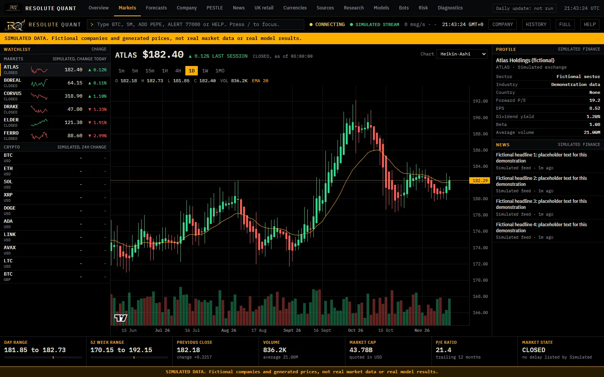

Why Resolute
- Resolute /ˈrez.ə.luːt/ adjective
- Determined. Firm in purpose, and patient while the work takes time.
- Resoluter noun, my own word
- Someone who is resolute: a person who decides, stays patient and follows through.
Resoluter isn't in any dictionary. I coined it for Resoluters, the clothing brand I started when I was about 16. It described who I was then, and it's the attitude this project needs now.
What it means here
- Decide first. Questions and pass marks are written down before any results exist, so they can't be bent to fit.
- Stay patient. Honest evidence takes months, and no test is skipped to get there sooner.
- Follow through. Failures are recorded with the results, and “no edge found” counts as an honest answer.
What it is
Resolute Quant is a terminal for studying markets. It runs on your own computer and brings crypto, stocks, indices, currencies and gold into one screen, with a watchlist, a price chart, an order book, a live trade tape and price alerts.
I am building it to learn how a dependable market data system works, then how to test forecasts honestly. Getting reliable answers matters more here than getting attractive ones, so every stage has written acceptance checks, and failures are recorded with the results.
This page is a project summary. The terminal itself runs locally and shows no market data here, because the data sources allow personal and research use, not public display.
Working now
- One command starts the terminal, and it reports clearly if its port is taken.
- All market data passes through a local backend that validates it. The page connects to no provider directly.
- Bad provider values are dropped and counted, never repaired or invented.
- Timeframes from one minute to one month, where the provider really supplies them.
- If the backend stops, the page says so and recovers by itself when it returns.
- A research workspace with indicators, risk scenarios, Monte Carlo ranges and six chart styles.
- Five forecasting experiments, run with pass marks fixed in advance. None passed.
Not done yet
- A model that has passed its tests. None has, so there is no evidence of any edge.
- The main five-day volatility test: designed, but not yet frozen or started.
- Resizable panels, and a longer history whose terms allow model training.
- Two acceptance checks are still open: frame smoothness under load, and a memory growth limit.
- Testing on other computers and against a real provider outage.
Where it is heading
Select a candle to open the plan for that stage.
Stage 1 of 7, done
A working terminal
One command starts it on your own computer, and it brings crypto, stocks, indices, currencies and gold into one screen.
- A watchlist, a price chart, an order book and a live trade tape
- Price alerts
- A clear message if its port is already taken
Done means it starts with one command and its acceptance checks run in a real browser. Two are still open: frame smoothness under load, and a memory growth limit.
Stage 2 of 7, done
All data through the backend
The page never contacts a data provider itself. A local Python backend fetches every price, checks it, and passes it on.
- Bad values are dropped and counted, never repaired or invented
- Timeframes from one minute to one month, only where the provider really supplies them
- If the backend stops, the page says so and recovers when it returns
Done means the page's only requests go to its own backend, plus the web fonts.
Stage 3 of 7, done
Research plan written
The first question is deliberately modest: how volatile will Bitcoin be over the next 24 hours?
- A simple historical benchmark first, then a transparent rule, then an interpretable statistical model
- Walk-forward tests in time order, on data each model has never seen
- Fees, spread and slippage counted in any strategy test
Done means the questions, tests and pass marks were written down before any model was trained.
Stage 4 of 7, done
A permitted data source
Daily and 5-minute US stock bars, whose provider confirmed in writing that private research use is allowed. Publishing the data, or figures derived from it, is not.
- Read each provider's terms before using its data
- Ask in writing where the terms are unclear
- Compare free and paid options
Done means a source is chosen whose terms allow model research. A longer history for training is still being looked for.
Stage 5 of 7, done
Research workspace
A workspace beside the terminal, with sections for forecasts, models, risk, news, company analysis and data sources.
- Technical indicators and six chart styles
- Risk scenarios and Monte Carlo ranges
- Resizable panels are still to come
Done means it runs on the same validated backend, and every existing check still passes.
Stage 6 of 7, in progress
Forecast tests
Run the research plan's tests on permitted data, from the simplest benchmark upward. Five experiments have run and none passed. The main five-day volatility test is being designed.
- Each model must beat the simpler ones on data it has never seen
- Results are reported whether they pass or fail
Done means every model has a recorded result against pass marks fixed in advance. “No edge found” is a valid outcome.
Stage 7 of 7, only if research passes
Paper observation
If a model passes, its forecasts are watched against live markets with no money at risk.
- Forecasts are recorded before the outcome is known
- Predictions, simulated results and real market outcomes are kept apart
- No orders are placed
Done means months of recorded forecasts, judged by rules set beforehand.
The candles show project stages, not prices. Live trading is not on this roadmap. It would need separate approval, risk limits, monitoring and a tested kill switch.
How the research works
The first questions were deliberately modest: how much will a price move, rather than which way. Volatility tests the whole pipeline without being mistaken for a trading edge, and any later strategy would need that estimate to size its risk.
Models must earn their complexity. A simple historical benchmark comes first, then a transparent rule, then an interpretable statistical model. Anything more complex has to beat those on data it has never seen, using walk-forward tests in time order and pass marks fixed before the results exist.
Strategy tests must also survive fees, spread and slippage, because exchange fees can be large next to short-term price moves. The most likely outcome is that no tradable edge is found, and that would be a valid result.
Built since: the research workspace
The terminal now has a research workspace, with sections for forecasts, models, risk, news, company analysis and data sources. Its code is kept private for now, because it works with data whose terms allow private research only.
These screenshots run the terminal's own backend code on prices generated from a seeded random walk, for fictional companies. Panels that need saved research results show invented placeholders or say they are unavailable, and a banner marks every screen. None of it is real market data or a real model result.




The models, step by step
The research uses daily and 5-minute bars for 41 large US companies, for private research only. The data terms don't allow figures derived from that data to be published, so this page gives the method and the verdict for each model, not the scores. None of the results has been independently reviewed yet.
Every model goes through the same eight steps
- Write the question down. One target and one horizon, before any data is read for it.
- Fix the pass marks. The benchmarks to beat, the statistical bar and the costs are set in code before the run, and never changed after.
- Seal the final period. The latest data is locked away. A guard stops any run whose dates would reach it.
- Build features that can't see the future. A test changes future prices and checks that no earlier row changes.
- Walk forward in time order. Train on the past, test on the next block, and leave a gap so the two never overlap.
- Beat simple rules after costs. “No change”, the past average and similar rules are the bar. Spread, slippage and fees are taken off, and the test is repeated at double cost.
- Count every attempt. Each variant tried is recorded, so a lucky one can't be picked quietly.
- Check the checker. On invented markets, the test must find nothing where nothing exists, and find an edge that was planted on purpose.
A model that passes all eight faces the sealed period once, then a forward record of forecasts saved before the day, then at least 50 days of paper trading. Real money stays blocked after that, until a separate review.
| Model | Question and method | Verdict |
|---|---|---|
| Next-day direction | Will tomorrow's price be higher or lower? Twelve features; LightGBM, XGBoost, CatBoost and a small neural network against no change, the past average, the last return and ridge regression. | Failed: no edge found |
| Next 5-minute bar | The same models on 5-minute bars, with the last fifth sealed and split conformal prediction intervals. | Failed: worse than no change |
| Market regime | Is the market calm, normal or stressed? A Gaussian hidden Markov model and a Gaussian mixture, with states chosen by BIC, judged as a volatility forecast. | Failed: kept on screen, marked unproven |
| Next-day volatility | How much will the price move tomorrow? HAR regression on realised variance from 5-minute bars, against last value, past average, 20-day average and EWMA. | Failed: beat the rules, missed the t mark |
| Take-profit or stop | Is a profit target or a stop hit first within the next hour? A triple-barrier label; LightGBM, CatBoost and a 1D convolutional network, walked forward with purging and an embargo. | Failed: no model passed |
| Five-day volatility, the main test | Pooled log-HAR, LightGBM and a blend of EWMA and HAR, against EWMA. The real test is 78 weeks of forecasts saved before each week. | Not started: design not yet frozen |
The paper trading simulator is built and tested on invented prices only, with position and exposure limits, a 3% daily loss limit, a 10% drawdown limit and a kill switch. It isn't connected to any broker or bot, and it is waiting for review.
How the project is run
I run this project with the frameworks I learned on my BSc in Applied Management, applied to software. A stage-gate process decides whether the project continues, and with what. Inside each stage the work moves in short PDCA cycles: plan, do, check, act. Disciplined Agile joins the two, keeping the process light where the risk is low, and strict wherever data rights, models or money are involved.
Every iteration is one PDCA cycle
- PPlan. Write the goal and the tests before any code.
- DDo. Build in small steps, on a separate branch.
- CCheck. Run every test, compare the result with the plan, and label the evidence.
- AAct. Keep what worked, or fix it and go round again.
Nine stages, each closed by a gate
After the foundation, two tracks run side by side. Both must pass before paper trading starts. Gates, not dates, decide progress.
Inception
Construction, two tracks in parallel
Transition, once both tracks pass
After the last gate, the project keeps operating and improving in the same PDCA cycles.
What can happen at a gate
- GoOn to the next stage.
- Conditional goOn, with named conditions to close.
- HoldWait for an outside blocker.
- RecycleBack to the stage that caused the fault.
- KillStop, and record why.
- Pass marks are fixed before the work starts, and never changed after the results are seen.
- A fault goes back to the stage that caused it, and every later stage that used it is checked again.
- Procurement is gated too. Nothing is bought, licensed or signed before the gate that needs it, and I approve each item myself.
This is the outline of the plan, not all of it. Its last stage, a controlled live launch, would need its own approval, risk limits and a tested kill switch. Nothing in the plan authorises trading, and the roadmap above covers the nearer stages only.
How it is built
Python sits at the centre. It's the only code that talks to the data providers, so everything on screen has passed its checks.
- Python
- JavaScript
- C++20
- SQL
- Lightweight Charts
- Qt 6
- SQLite
- Python unit tests
- End-to-end checks in Edge
- Qt tests
- Git and GitHub
- GitHub Pages
- Claude Code
I build it with AI assistance and stay responsible for the result: I set the goals, review the changes and decide what ships. The reports in the repository record what passed, what failed and what was not tested.